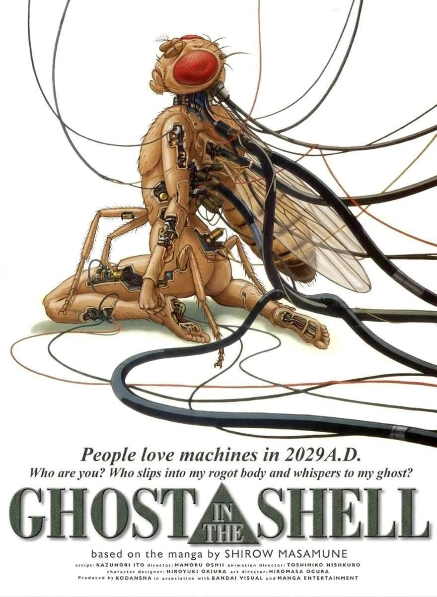
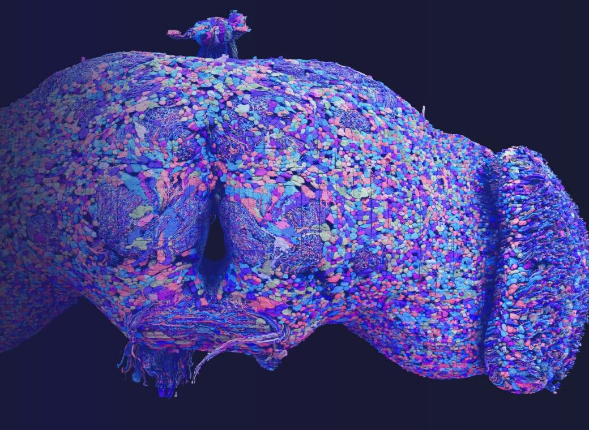
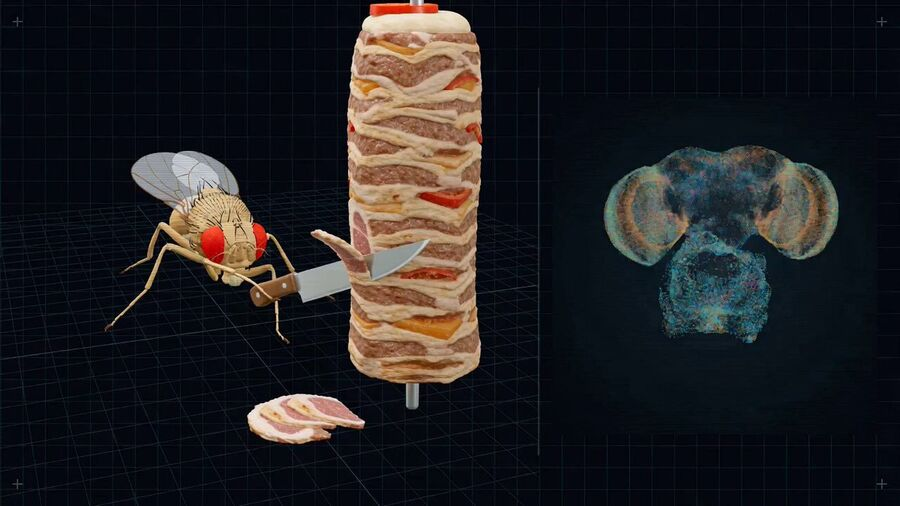

Достаточно маленький мозг, чтобы разобрать его целиком, и достаточно сложный, чтобы было что изучать.

Муха бегает и стреляет, но играть так и не научилась. Автор честно пишет это в README.
Код, по словам автора, целиком написан нейросетью ради интереса.
Две мухи на полной карте MaleCNS, веса общие, состояние нейронов у каждой своё. Проверить без кода нельзя.
Активность нейронов выбирает заранее написанные программы движения. Мод пока не выложен.

| Проект | Что подают на вход | Что читают на выходе | Учится ли |
|---|---|---|---|
| Eon | вкус, пыль, зрение flyvis | команды контроллеру тела | почти нет |
| DOOMFLY | пиксели кадра | поворот, ход, выстрел | пробовали, проверки провалены |
| Fly64 | картинка игры | бег, повороты, прыжок | нет |
| flytrader | рынок как вкус и запах | хоботок и бегство | пользы не показали |
| FlyPong | положение мяча | высота полёта и удар ракеткой | автор пишет, что обучил, кода нет |
| NeuroCraft | события Minecraft | готовые программы движения | не заявлено |
Похоже на алерт с кумулятивным эффектом, только вместо ошибок копится напряжение
Первые шаги пусть делает муха, а человек подключается, если она не смогла.
{ "resource_id": "synthetic-service-8", "step": 0, "metrics": { "available": false, "latency_ms": 800.0, "error_ratio": 0.8, "cpu_ratio": 0.9, "memory_ratio": 0.8, "anomaly_score": 0.9 }, "last_result": "UNHEALTHY", "priority": "HIGH" }
{ "action": "RESTART_SANDBOX_SERVICE", "scores": { "RESTART_SANDBOX_SERVICE": 1.00, "READ_SERVICE_HEALTH": -1.00, "VERIFY_RECOVERY": -1.00, ... }, "diagnostics": { "simulation_ms": 20.0, "elapsed_ms": 1.01, "spike_count": 232, "active_neurons": 112, "neurons": 256, "edges": 513 } }
| Вариант | Macro-F1 | Эпизоды |
|---|---|---|
| Муха FlyWire + LIF | 1,000 | 72/72 |
| Обычные правила | 1,000 | 72/72 |
| Линейная модель без нейронов | 1,000 | 72/72 |
| Муха с перемешанной картой | 1,000 | 72/72 |
| Всегда самый частый ответ | 0,077 | 24/72 |
if obs.task_kind == "UNSUPPORTED": return ABSTAIN if not obs.diagnostic_present: return VERIFY if restarted else READ if obs.verified and restarted: return WAIT if available else MENTION if available: return WAIT return RESTART
Сигнал через муху проходит, но на такой лёгкой задаче её схема связей ничего не добавляет.
Буду рад ответить на ваши вопросы